A brand new foundation for the pack. We are moving to Forge, rebuilding MineColonies on its latest version, and adding 26 new mods packed with dungeons, dimensions, bosses and gear. On top of that, here is everything we have shipped to the server, the launcher and the site since last weekend.
These changes are all on the server, so there is nothing to download. Pack 1.5.2 is still the current version.
15 of the mod's biggest buildings, including the Mushroom Monstrosity's arena and the Endersent's lair, were too wide for the way the mod placed them, so they spawned chopped off at chunk edges. They now generate whole, with their bosses.
This applies to land nobody has explored yet. Buildings that already spawned cut off stay as they are.
A server bot called FG_Scout is flying over unexplored land and generating it ahead of time, out to about 4,500 blocks from spawn. Travelling somewhere new causes less lag, and Distant Horizons has more far terrain to show.
It stays well away from land that already exists, so your builds are never touched. If you see FG_Scout in the player list or chat, that is the bot at work. It also tests new land for crashes, which is how the Dungeons fix above was found.
Some structures were spawning with parts missing, because their building plans asked for pieces under the wrong name. As of the October 9 restart they spawn complete:
Like the Dungeons fix, this applies to land generated from now on.
Fixes for the first problems found in the test period, on the server and in the pack.
Open the Fighters Guild Launcher and press Update to get pack 1.5.2 before you join. The launcher updates itself to 1.0.8 first if it needs to.
1.5 is on the server. Here is what changed since launch, and what you need to do to join.
1.5 runs on Forge, which only launcher 1.0.7 and newer can install. Launchers from 1.0.5 on update themselves when you open them. If yours does not, or you are not sure which version you have, download the latest from the Download tab and run it.
Then press Update in the launcher to get pack 1.5.1.
One of Alex's Caves' lighting settings stopped Distant Horizons from drawing far terrain at all. 1.5.1 turns it off.
Keep your render distance at 10 or lower. The server sends 10 chunks, and Distant Horizons only draws past your own render distance, so a higher setting leaves an empty ring around you.
Play normally and report crashes, broken items, missing blocks or anything odd in the Discord. The server is also rebuilding its far terrain for 1.5, so distant land fills in over the next few days.
Big projects are at your own risk until Saturday evening. See the launch plan for why.
Three changes in 1.5 are bigger than any single mod. They touch almost everything in the pack, so they get their own spotlight.
Since day one the pack has run on an early NeoForge build for Minecraft 1.20.1. Most 1.20.1 mods are now built and tested against the current Forge release instead, and the gap had grown wide enough that several of your suggestions simply would not start on our old loader. Update 1.5 moves the whole pack to Forge 47.4.26, the newest Forge for 1.20.1.
Our MineColonies was about seven hundred builds behind. 1.5 jumps all the way to the latest stable release, together with the libraries it is built on: Structurize, BlockUI and Domum Ornamentum.
Iron's Spells gets its largest update since it joined the pack: a long list of new spells, items and balance changes, plus a rebuilt recipe viewer integration. The old version did not scale with all the new weapons in 1.5 and froze the game while loading, which the new version fixes.
Iron's Spells 3.15 brought every new feature from versions 3.5 through 3.15 back to Minecraft 1.20.1 in one go, so we skip straight past twelve versions of content. It now needs a small helper library, Iron's Lib, which comes with the update automatically.
Grouped by what they bring. Mods marked Suggested came straight from your suggestions for 1.5.
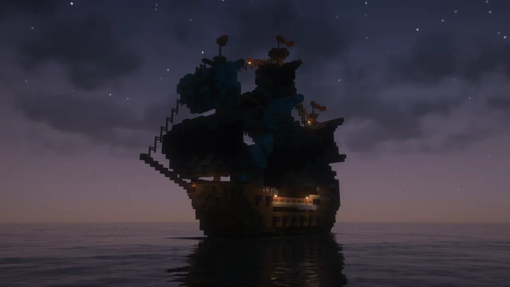
The sea expansion for When Dungeons Arise, which is already in the pack. Huge ships and naval fortresses, most of them crewed and hostile, scattered across the oceans.
Underwater dungeons: sunken ships, ruins and ocean temples to dive into for loot.
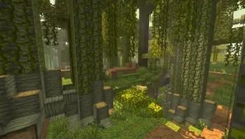
Ports the content of Minecraft Dungeons into Java Edition: its mobs, gear and themed levels to explore.
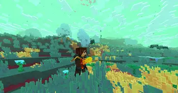
Continues Dungeons Content with material from later Minecraft Dungeons updates, including a new dimension, new mobs and unique items.
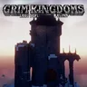
Lost forts, citadels and castle ruins guarded by vanilla mobs, with hidden loot tucked inside.
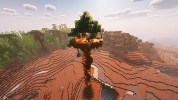
Lookout towers across the world, and in modded dimensions and planets too, each with a reward waiting at the top.
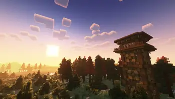
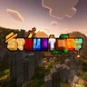
Small, atmospheric ruins and buildings with a bit of lore, blended naturally into the landscape.
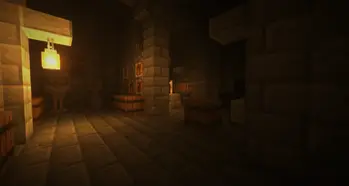
A complete redesign of strongholds, joining YUNG's dungeons, mineshafts and bridges already in the pack.
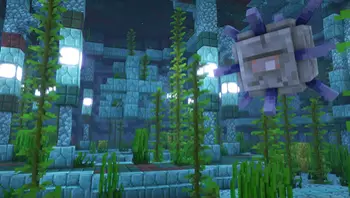
A complete redesign of ocean monuments, bigger and far more varied inside.
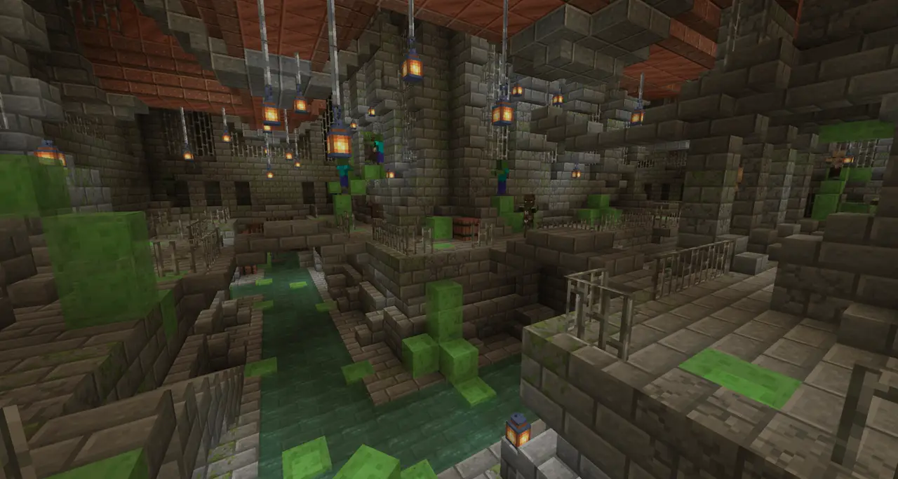
Build a portal anywhere and use keys to open randomly generated dungeons in their own dimension. Endless runs from a single portal.
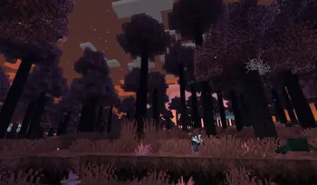
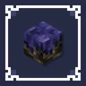
A whole new dimension, the magical Starlight dimension, with its own biomes, creatures, bosses and materials.
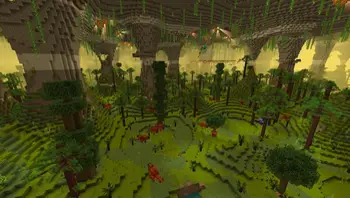
Six rare cave biomes hidden under the Overworld, from a primordial cave full of dinosaurs to a toxic, radioactive one, each with its own mobs and gear.
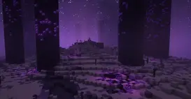
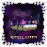
A full fantasy overhaul of The End: new biomes, structures, items and weapons to discover.
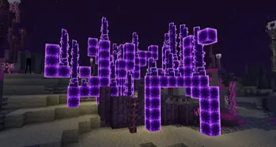
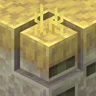
More End: new End biomes and structures, including lighthouses and towers out in the void.
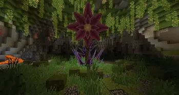
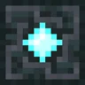
Big, multi-phase boss fights spread across the world, each guarding its own lair and rewards.
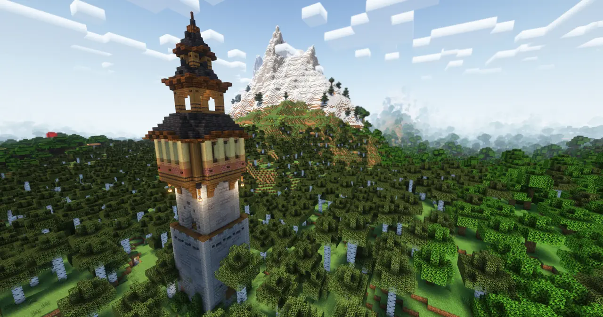
Spooky, aggressive mobs with their own quirks, plus new structures, gear and achievements. Perfect company for a blood moon.
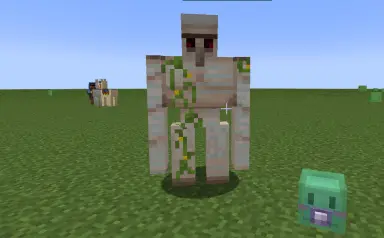
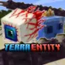
Monsters, bosses and NPCs straight out of Terraria.
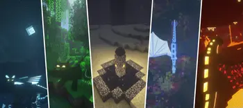
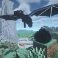
Hatch a dragon from an egg, raise it and ride it. Our replacement for Dragon Mounts Remastered.
Spears, glaives, chakrams, katanas, greathammers, rapiers and a lot more, plus unique legendary weapons with special abilities.
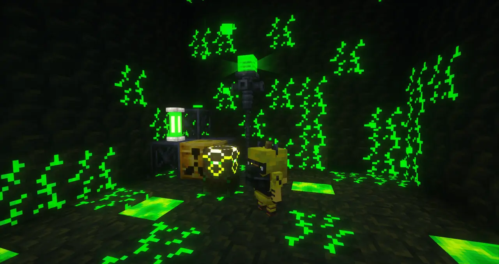
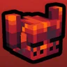
More than 30 detailed armor sets to quest for, along with new mobs to fight for them.
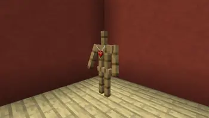
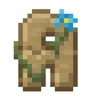
Treasure items with handy effects, found while exploring and worn in your accessory slots. Watch out for mimics.
A dodge roll on a key, with enchantments and attributes that improve it. Pairs nicely with the new bosses.
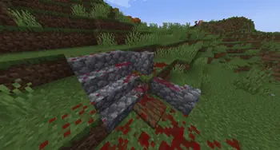
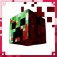
Simple, cartoonish blood effects when you land a hit. Purely visual.
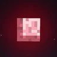
Terraria style blood moons. Some nights the moon turns red and far more monsters come out to play.
New lunar events: harvest moons that boost crop drops, blue moons and super moons, in the rebuilt second version of the mod. Its own blood moon is switched off so it does not stack with Bloodmoon Rebrushed.
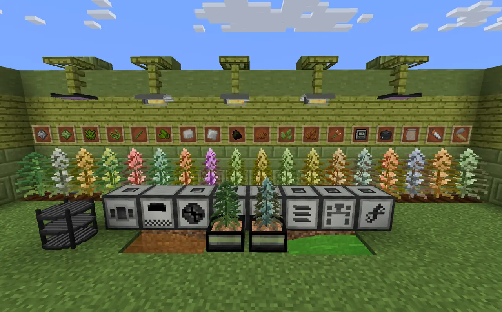
A small tech mod about growing and processing Smokeleaf strains, each giving you different beneficial effects.
Also included as supporting libraries, invisible in play: Library Ferret, Formations, Knight Lib, CERBON's API, Iron's Lib, CorgiLib, Data Anchor, Fzzy Config, Simply Tooltips, GuideME, Cobweb and Almanac.
Besides MineColonies and Iron's Spells, 148 mods are on newer versions in 1.5. The first group was needed to make everything work on Forge; after that we brought the rest of the pack up to date, checking every update against the others before it went in. The highlights are below, with the full list underneath.
| Mod | Version | Why |
|---|---|---|
| Structurize, BlockUI, Domum Ornamentum | to the versions MineColonies 1301 needs | Required by the new MineColonies. |
| Apotheosis | 7.3.5 → 7.4.8 | The old version threw errors against Forge's newer shield handling. Placebo and Apothic Attributes were updated alongside it. |
| Curios API | 5.9.1 → 5.14.1 | Required by the new Iron's Spells. Every mod that uses Curios accepts the new version. |
| Just Enough Items | 15.3 → 15.27 | A newer recipe viewer with loading improvements for big packs. |
| Cyclic | 1.12.9 → 1.13.7 | The old Cyclic library only ran on NeoForge and crashed the game on Forge. Updated together with its library, flib. |
| Elytra Slot | 6.4.0 → 6.4.4 | Fixes a rare error during startup that also shows up on the current server. |
| Ad Astra | 1.15.18 → 1.15.19 | Paired with Ad Astra: Giselle Addon 6.9 → 6.18, which avoids a crash in the Fuel Loader screen with the new recipe viewer. |
| GeckoLib, Cloth Config, Citadel, YUNG's API | latest 1.20.1 releases | Required by the new mods. Fully compatible with the mods already using them. |
| ModernFix | 5.18 → 5.27 | Fifty releases of performance and memory fixes for large modpacks. |
| Applied Energistics 2 | 15.2 → 15.4 | A long list of fixes. AE2 Wireless Terminals, ME Requester, MEGA Cells, Applied Mekanistics and Applied Botanics were updated with it. |
| Botania | 444 → 456 | Twelve releases of fixes. |
| Mekanism | 10.4.8 → 10.4.16 | Bug fixes for Mekanism, Generators, Additions and Tools. |
| Integrated Dynamics | 1.22 → 1.31 | Along with Integrated Terminals, Tunnels and Crafting: fixes and performance improvements for logic networks. |
| Farmer's Delight | 1.2.4 → 1.3.4 | New Bamboo Basket and more. Heads up: the original Basket is replaced by a new one, so empty your baskets before 1.5 goes live. Anything left inside is lost. |
| Mowzie's Mobs | 1.6 → 1.8 | A content update, including the new Earthrend Gauntlet. |
| Occultism, Blood Magic, Ars Nouveau | latest 1.20.1 releases | Fixes across the magic mods. |
| Embeddium, Not Enough Animations | 0.3.31, 1.12 | Rendering fixes, and many more first and third person animations. |
| Pack cleanup | Removed leftover duplicate copies of FerriteCore, Almost Unified and Not Enough Animations that had been sitting in the pack. |
Things we found and fixed while testing 1.5.
A few items and item combinations turned out to be far stronger than intended once the new mods were in the mix, and have been adjusted.
The zombie horde nights are gone from the Trick or Trainer season. The rest of the battle pass, its rewards and the Halloween decorations stay as they are.
A lot landed on the server, the launcher and this site over the past few days. All of this went live ahead of 1.5.
The new Map tab shows a full, zoomable map of our world, rendered straight from the server. It opens on the Overworld in a flat, top-down view, and you can switch to 3D or to other dimensions. More of the map fills in with each render.
The Fighters Guild Launcher has a new Shaders button. Pick any of 33 shader packs, sorted into light, medium and heavy, and the launcher installs them along with everything they need. Remove any of them just as easily.
Every pack is listed with a screenshot and description in the new Shaders tab.
The new Leaderboard tab ranks everyone by
play time, kills, deaths, blocks mined and distance traveled, using the same
stats as !mc stats in chat. It refreshes every week.
We tracked down something that had been keeping around 560 chunks loaded and running around the clock, even with nobody online. With that fixed, the server does about a third of the work it used to when idle.
The server also got more memory and better tuning. During play, lag warnings dropped from about 150 an hour to nearly none.
The Nether was wiped and regenerated from a brand new seed. Newly explored Overworld land now generates with Large Biomes, so there is more room to roam between landmarks.
Distant Horizons shows the far landscape on both the server and your client, generated by the server so your PC does not have to.
A small bug in one mod's world data was stopping cave and ravine carving in newly generated land. 1.5 includes the fix, so fresh terrain gets its caves and ravines again, along with the new cave biomes from Alex's Caves.
In 1.5, Distant Horizons only draws far terrain in the Overworld, the Nether, the End and the second Overworld. Skipping the many side dimensions saves server resources for the worlds people actually explore.
Every mod you suggested for 1.5, and what happened to it. Some made it in, some made it in with a few quirks to know about, some got a replacement, and a few could not be added. Here is why.
Added as Bloodmoon Rebrushed. Blood moon nights spawn far more monsters, so expect more lag than usual while one is up, especially with several players spread out. Enhanced Celestials also has a blood moon, which we switched off so the two never stack.
Stellarity only reshapes End terrain that has not been generated yet. Parts of the End we have already explored stay as they are, so you may see sharp borders where old and new terrain meet. Head further out for the full experience.
We added and tested it, but its leveling and stat system overlapped too much with the progression the pack already has, so characters stacked bonuses from several systems at once. It was pulled before release.
Its armor and mobs are detailed animated models. On lower end PCs, crowds of them or lots of armored players can cost some frame rate.
Eternal Starlight is officially made for newer Minecraft versions. We are using a community port to 1.20.1, so a few items or features may be rough or missing compared to the original. Distant Horizons does not draw far terrain in its dimension.
In testing, its NPC traders sometimes failed to refresh their trades and logged an error. It does not crash the game, but a trader may show stale or missing trades.
It and the Aether both change the boss health bar at the top of the screen, so the bars may overlap if you fight bosses from both at once. Boss fights are heavy, so expect a bit of lag during big fights.
Its recipes do not show up in the recipe viewer. Smokeleaf needs a newer recipe viewer than we can run, because the newer one froze the game for minutes while loading with a pack this size. The mod itself works normally.
Scape and Run: Parasites only exists for Minecraft 1.12.2, years older than our version. We tested Fungal Infection: Spore as a stand-in, since it has the same spreading infection idea, but it took over too much of the world for a shared survival server, so it was left out as well.
Remastered is only available for Minecraft 1.21.1. It is replaced by Dragon Mounts: Legacy, which lets you hatch, raise and ride dragons on our version. Legacy is still marked beta, so report anything odd.
Vivecraft rewrites how the game draws the world and handles input, and those same areas are already customized by FancyMenu, Embeddium, Distant Horizons and the shader packs. Mixing all of that safely needs its own round of testing. We may revisit it later as an optional add-on, like shaders.
Controlify has no official version for our setup, only an unofficial port. It reworks every menu and input in the game, the same parts FancyMenu, Controlling and the recipe viewer already change, so it needs dedicated testing first. We may revisit it later.
Etherology only exists for Minecraft 1.21 on the Fabric loader. There is no version that can run in our pack, and no close replacement.
Its 1.20.1 version is unfinished. The mod itself warns that all of its dimensions and most of its mobs are missing on this version. At 140 MB it also added a lot of memory use and loading time for very little content, so we pulled it after testing.
This is the biggest change the pack has ever had, so we are rolling it out carefully.
for helping hunt down issues and testing fixes.
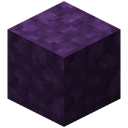